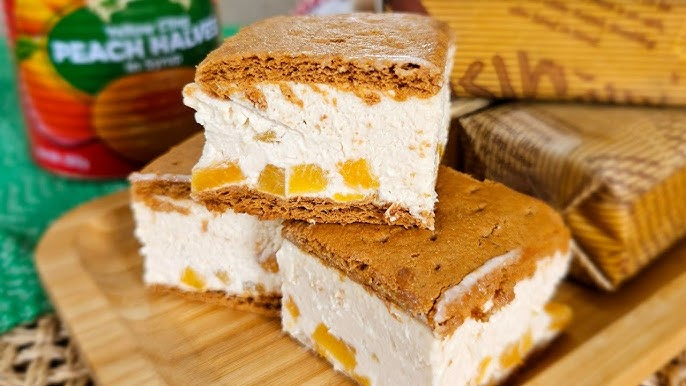

Mango Cream Pie Recipe
Ingredients:
- 2 cups crushed graham crackers
- 1/2 cup melted butter
- 1/2 cup condensed milk
- 1/2 cup chocolate chips (optional)
- 1/4 cup chopped nuts (optional)
Instructions:
- Mix graham cracker crumbs and melted butter until well combined.
- Press the mixture into a lined 8x8-inch pan.
- Drizzle condensed milk evenly over the crust.
- Sprinkle chocolate chips and nuts on top (if using).
- Chill in the fridge for 1-2 hours until firm.
- Cut into bars.